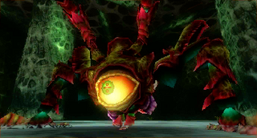

A merdificação do Github
Uma série de acontecimentos recentes está colocando em evidência a decadência da qualidade do 'rei da hospedagem open source' o Github. Vamos falar sobre
Veja no canal:
Tudo começo com o zig migrando
https://ziglang.org/news/migrating-from-github-to-codeberg/
https://devclass.com/2025/11/27/zig-project-ditches-github-for-codeberg-but-move-could-be-costly/
O principal problema em deixar o GitHub, disse Kelley, é que o GitHub Sponsors, um programa que facilita as doações para o projeto, fornece uma parte substancial da receita da Zig Software Foundation. Em 2024, foi a maior fonte individual de renda, com mais de US$ 170.000 doados.
"Consideramos isso um passivo", disse Kelley, solicitando que os patrocinadores usem um canal diferente, como o Every.org, que também é uma organização sem fins lucrativos.
Eu queria que a gente lembrasse um pouco como era 'antes' do Github
-
O Github foi aberto em 2008 como uma startup lá no Vale do Silício. Eu procurei e o meu primeiro repositório foi criado em 2010
-
Eu não sei se todo mundo usava git antes do site (eu sei que os devs do kernel do Linux sim), mas eu notei uma popularização dele depois do github
- O livro do Tom Preston Werner é muito bom
- O que existia antes deixava a desejar (sourceforge, google code, ...)
-
O que eu quero dizer é que o site conquistou o seu lugar sendo uma plataforma muito agradável de usar, é uma sensação que é raríssimo a gente sentir com algum novo 'produto' recentemente (talvez eu esteja velho)
-
Como explicado na postagem do Zig a compra pela Microsoft em 2018 com certeza foi o início do fim, mas nos prometeram que dessa vez ia ser diferente...
- Houveram esforços de migração parecidos com o que existe hoje naquela época, mas não 'vingou'
- Eu desconfio que o aspecto de 'rede social' que se formou no Github estava muito mais na moda naquela época
Sobre as Github Actions
-
Em resumo: o sistema de Github Actions do qual milhares de projetos dependem tem falhas ridículas de código e precificação. Dá a impressão de 'abandonado'
- Cobrar por minutos arredondado para cima é insano
- Aonde estão as prioridades da empresa?
-
Quase como em resposta a isso o Github dá a resposta: agora as suas ações auto hospedadas também serão cobradas (eles já voltaram atrás!)
https://www.reddit.com/r/devops/comments/1po8hj5/github_actions_introducing_a_perminute_fee_for/
https://resources.github.com/actions/2026-pricing-changes-for-github-actions/
- Isso parece simplesmente ganância, mas é um pouquinho pior. É uma tentativa de desincentivar a competição e te obrigar a usar o ecossistema de soluções deles.
E enquanto isso o foco da empresa é 'IA'
https://olhardigital.com.br/2025/08/12/pro/github-perde-ceo-e-presenca-de-ia-deve-aumentar/
Nos últimos anos, a Microsoft tem integrado ferramentas de IA ao GitHub, incluindo o lançamento do GitHub Copilot, uma ferramenta de codificação assistida por inteligência artificial. A plataforma oferece suporte a vários modelos de linguagem e “agentes” que auxiliam no trabalho de codificação em segundo plano.
Em janeiro, o GitHub passou a fazer parte do recém-criado CoreAI, como anunciou o CEO da Microsoft, Satya Nadella. “Precisamos lembrar que nossos limites organizacionais internos não significam nada para nossos clientes e concorrentes”, escreveu ele à época.
Situação como essa são cada vez mais comuns...
https://github.com/ocaml/ocaml/pull/14369
Conclusões
-
O medo do poder da Microsoft sobre a comunidade de projetos abertos e livres sempre esteve presente, mas nós deixamos isso morrer (o que foi um erro)
- O lema da M$ é 'abraçar para extinguir'
-
Por que o build tem que ficar lá dentro? Será que existe uma real dependencia dos projetos no github?

-
Eles tem ainda os Github Pages, Actions (com todos problemas), releases, wikis, sistemas de issues, boards, sponsors e muito mais
-
Porém a incorporação de IA em tudo, o uso anti ético do nosso código para o treinamento desses modelos e a dificuldade de escapar dela mostram que